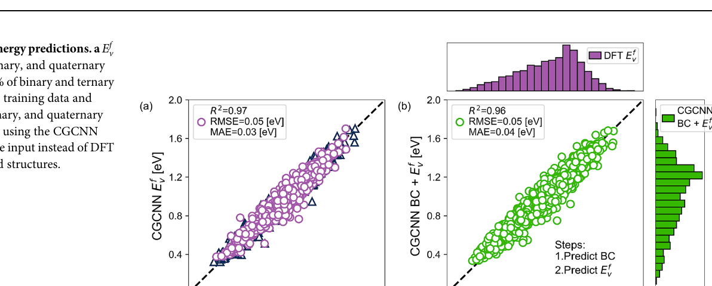
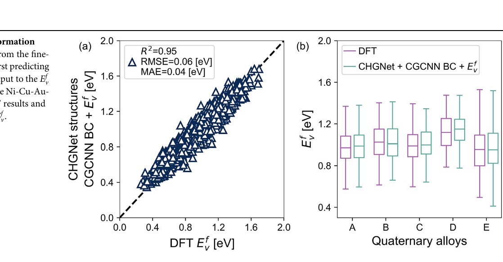
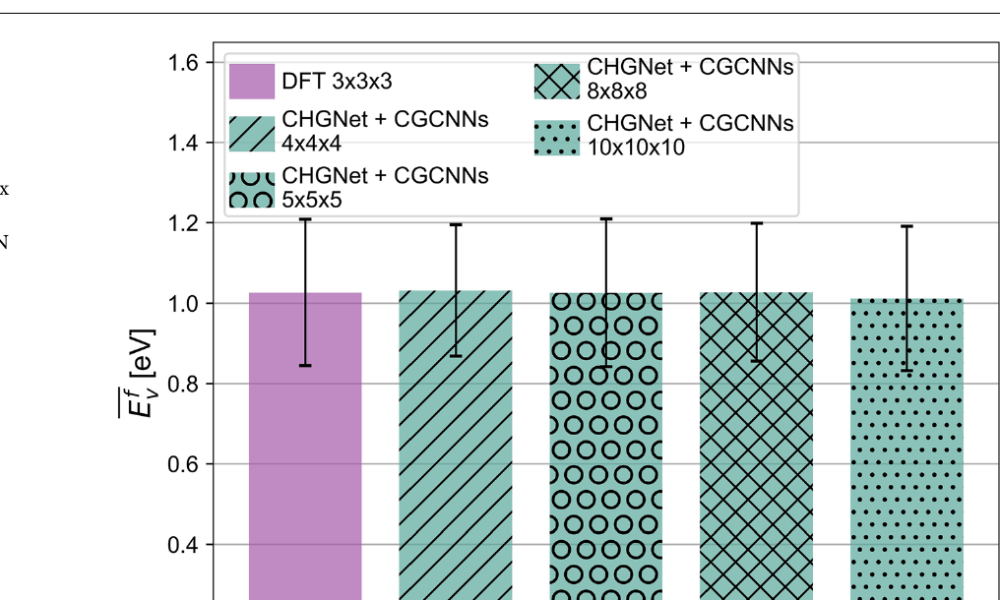
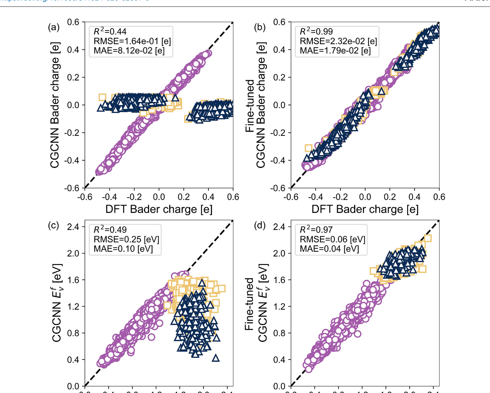

Resumen
La complejidad composicional y la aleatoriedad química de las aleaciones de alta entropía (HEAs) hacen que los cálculos atomísticos convencionales como la teoría del funcional de la densidad (DFT) sean prohibitivamente costosos para predecir propiedades. Una propiedad clave es la energía de formación de vacancias (Evf), crucial para la difusión y la evolución microestructural. Este trabajo presenta un marco de aprendizaje automático que elimina la necesidad de DFT para predecir Evf en HEAs, usando modelos entrenados con aleaciones binarias y ternarias.
- Se relajan estructuras FCC con un modelo CHGNet ajustado (fine-tuned) para capturar la distorsión de red.
- Una red neuronal de grafos cristalinos (CGCNN) modificada predice tanto las cargas de Bader como Evf.
- Incorporar las cargas de Bader como descriptores aporta información electrónica de tipo DFT y mejora notablemente la precisión.
- El modelo generaliza a otros sistemas (p. ej. Ni-Co-Cr) con mínimo ajuste fino, habilitando predicción de defectos de alto rendimiento.
Figuras

a, c, e Volumen atómico frente a Evf y b, d, f carga de Bader frente a Evf en aleaciones Ni-Cu, Ag-Au y Cu-Au. En Ni-Cu y Cu-Au (a y e), Evf aumenta con el volumen atómico por las grandes diferencias de volumen entre los dos elementos; en Ag-Au (c) no hay correlación porque sus volúmenes son similares. Análogamente, las diferencias de electronegatividad afectan a Evf: en Ag-Au y Cu-Au (d y f) se correlaciona con la carga de Bader, mientras que en Ni-Cu (b), al tener electronegatividades parecidas, no hay correlación.

El marco convencional para obtener Evf requiere relajar el supercell con DFT y luego calcular la energía de cada vacancia, lo cual es computacionalmente costoso en HEAs. El marco propuesto sustituye la DFT por aprendizaje automático: las estructuras se relajan con CHGNet ajustado (Modelo 1) para lograr distorsiones de red a nivel DFT; después se predicen las cargas de Bader (Modelo 2) y finalmente las Evf (Modelo 3) usando «mini» grafos. Así se evita la DFT con un coste mínimo.

a Desplazamiento atómico medio (MAD, eje izquierdo) y δ (eje derecho) para las 41 aleaciones binarias, ternarias y cuaternarias del estudio. El MAD se muestra con cuadrados (CHGNet v0.3.0), triángulos (CHGNet ajustado) y círculos (DFT); DFT y el modelo ajustado concuerdan muy bien. b MAD con barras de desviación estándar para las cinco aleaciones cuaternarias: el CHGNet ajustado mejora claramente el MAD y las desviaciones. c Comparación del MAD entre relajaciones DFT y CHGNet; el modelo ajustado (triángulos) mejora frente a CHGNet v0.3.0 (cuadrados) en las 41 aleaciones.

a Predicciones de carga de Bader en aleaciones binarias, ternarias y cuaternarias entrenando con el 70% de los datos binarios (triángulos azules: entrenamiento; círculos morados: prueba). b Comparación de las cargas de Bader predichas para estructuras relajadas con DFT (eje x) y con CHGNet ajustado (eje y): ambas producen esencialmente las mismas predicciones, lo que indica que el supercell relajado con CHGNet basta para obtener cargas precisas.

a Predicciones de Evf en todas las aleaciones entrenando solo con el 80% de los datos binarios y ternarios (triángulos azules: entrenamiento; círculos morados: prueba). b Predicciones de Evf usando las cargas de Bader predichas por CGCNN como entrada, en lugar de las cargas de Bader de DFT, con mínima pérdida de precisión.

a Predicciones de Evf partiendo del CHGNet ajustado: primero se predicen las cargas de Bader y se usan como entrada al modelo de Evf de la Fig. 5. b Diagramas de caja de Evf para las cinco aleaciones Ni-Cu-Au-Pd, comparando los resultados DFT con el pipeline CHGNet + CGCNN (carga de Bader) + Evf.

Valores promedio y desviación estándar de Evf para NiCuAuPd equiatómico: cálculos DFT en supercell 3×3×3 (108 átomos) y predicciones en supercells 4×4×4 (256 átomos), 5×5×5 (500 átomos), 8×8×8 (2048 átomos) y 10×10×10 (4000 átomos) mediante CHGNet ajustado, carga de Bader CGCNN y el modelo de Evf CGCNN. El método permite tamaños de sistema mucho mayores que los accesibles por DFT.

Datos del sistema Ni-Cu-Au-Pd en círculos morados; datos de Ni0.50Co0.50, Ni0.75Cr0.25 y Ni0.33Co0.33Cr0.33 en cuadrados dorados; estructuras quasirandom y de orden de corto alcance (SRO) en triángulos azules (base MPContribs de Walsh et al.). a Carga de Bader con el modelo entrenado en Ni, Cu, Au y Pd. b Carga de Bader con el modelo ajustado. c Evf con el modelo entrenado en binarias y ternarias Ni-Cu-Au-Pd. d Evf con el modelo ajustado: al reentrenar con datos Ni-Co-Cr, las predicciones en (d) son precisas frente a (c).